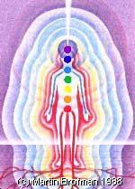
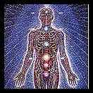

The Subtle Body
|

Behind the obvious physical being is a series of
more subtle vehicles of consciousness, each with its own
aura
(shown here as concentric ovoids around the body) and energy
dynamics. The set of small circles down the mid-line of the body
are the
chakras.
illustration (c) by  Martin
Brofman Martin
Brofman |
Beyond the consciousness of the gross physical body itself
is the emotional, mental and spiritual consciousness of what could collectively
be termed the psyche. The Psyche is not a single entity in the way that the
Physical
Body is, but rather the sum of a number of distinct "subtle
bodies" note
or vehicles of consciousness that exist as frequency levels on the
Etheric
Plane. The word "subtle" is used to distinguish these bodies from the gross
physical
body.
Here is a tentative and speculative interpretation of the
suble bodies. Four "vertical" worlds - the physical, etheric,
astral/psychic, and mental/ideational - are suggested. Corresponding to these
are three grades of increasing subtleness - the gross
(representing physical consciousness), the subtle, representing
psychic/interpersonal, and the very subtle or causal, corresponding
to the transpersonal, the
Theosophical
Devachen and
Steiner's "Spirit" realm. A fourth grade, the
transcendent,
could be added, but this is generally beyond mundane consciousness. So there is
a dual parameter framework, not unlike the Neoplatonist
Proclus'
scheme of
hypostases.
Thus according to this hypothesis there would be three
distinct "vertical" grades of subtle body, with the physical as a fourth. lowest
level. Of course, not everyone has the same level of development. Very few
have a well developed ideational body, which is why so many people have to rely
on dogmatism,
literalism,
fundamentalism, guru-ism,
and other forms of stupidity. They are unable to mentally perceive things on
their own, hence they have to rely on the thoughts and mentality of others,
which they adhere to rigidly.
Similarily, only a few individuals have a developed
transpersonal consciousness (equivalent to the "Very Subtle"/"Causal" column of
the above table). Although such faculties exist in potential or germinal form
in everyone (and in all sentient beings), it is only in some that they are
brought out.
Kabbalah
says that only the lowest grade of soul (nefesh) is inately developed, all the
others have to be attained through spiritual discipline. One finds
Gurdjieff, the
Taoists, and
others saying the same thing.
The Etheric Bodies
The Etheric Bodies collectively correspond to what the
Ancient Egyptians
referred to as the Ka. The various subtle bodies constitute the
energy
blueprints both for those subtle bodies below them, and for the gross
physical body and physical consciousness. Although the subtle bodies are
invisible to our normal sense-perception, certain individuals have - whether
through innate ability or training - developed a higher or extended sense
perception, and have, on this basis, described these subtle bodies, and various
associated phenomena. These individuals are known as
Clairvoyants.
There is no doubt that clairvoyants do perceive something, even if the majority
are very limited in their abilities. They only see a little bit, and then they
claim on this basis to know everything. There are however rare clairvoyants who
do have exceptional abilities. Such higher clairvoyance seems to be always
associated with both a great spiritual development and a very strong Healing
ability.

Psychic Energy System by
Alex Grey © 1980
Most forms of Clairvoyance - seeing
auras, colours,
chakras, and so
on - pertain to the various resonances of the Subtle Physical. Here we have
what in Theosophical
and especially in popular
New Age occult
terminology are called the Etheric, Emotional, and Mental bodies, also called "koshas",
"subtle bodies" or "vehicles of consciousness". Each has its own emanated field
of influence, its own atmosphere or aura. All writers on this subject are in
agreement that the aura of the Etheric body is the smallest in extent, whilst
the Mental aura is the largest of these three. The higher spiritual auras are
larger again. However, these clairvoyants all differ as to the precise size or
extent of each aura beyond the physical body (usually it ranges from a
centimeter or so to a meter or more, depending on the subtle body).
In all of these planes and bodies one finds individualised
resonances of higher worlds. So the physical intellect or "Mental Body" is the
lower octave, or resonance, of the
Noeric Universe,
and the instrument of reason and imagination, or in short, thinking. The
"Emotional Body" is the lower octave, or resonance, of the
Psychic Universe,
and pertains to feelings, desires, and emotions; in short, teeling. And the
somatic-physical represents the basic nature of that particular plane itself
(Chthonic, Material-Physical, or Etheric), and constitutes the "consciousness of
the body";
Basically we can speak of three grades of etheric subtle
body:
This classification of the person into Physical,
Emotional, and Mental or Intellectual faculties is familiar to anyone who has
encountered the
Gurdjieff/Ouspensky theory of "Centers",
Rudolph Steiner's
faculties of thinking, feeling, and willing,
Da Free John's first
three "Stages of Life", and
Sri Aurobindo's
psychological divisions, to give just a few examples.
The mental body here is not to be confused with
the
Ideational Mental body, which pertains to the
Mental-Psychic
and perhaps also the lower part of the
Noeric Universe
In addition to the Etheric, Emotional, and Mental bodies
which are innate in everyone, there is also the possibility of further evolution
in developing higher levels of consciousness.
Sri Aurobindo
for example refers to the
Higher Mental,
Illumined,
Intuitive,
Overmental,
and finally
Supramental states of consciousness that lie beyond the ordinary intellect
or Mental body. I would associate these higher faculties with the
Noeric,
Noetic , and
even (according to Sri Aurobindo in the case of the
Supramental attainment), the
Manifest
Absolute realities.
In addition each grade of body exists in each of planes of
being. So what we have are a series of octaves, which can be represented as
follows:
| Higher faculties |
actualised through spiritual
evolution "fifth kosha" of
Ann Ree
Colton, the
Supramentalisation of
Sri Aurobindo,
etc. |
|
Mental
|
mental body
reason |
imagination |
causal body
intuition |
-- |
|
Emotional |
emotional body |
interpersonal |
compassionate body |
-- |
|
Etheric |
physical etheric body |
psychic etheric |
spiritual etheric |
-- |
| |
Gross/
Physical/
Asiyatic |
Subtle/
Psychic/
Yetziratic |
Causal/
Spiritual/
Beriatic |
further grades to be actualised through spiritual
evolution |
Each grade or resonance of being is represented by a
subtle body, and each subtle body has its own emanated field of influence, its
own atmosphere or
aura. All writers on this subject are in agreement that the aura of the
Etheric body is the smallest in extent (only slightly larger than the boundaries
of the physical body), whilst the Spiritual aura is the largest. However, these
clairvoyants all differ as to the precise size or extent of each aura beyond the
physical body (usually it ranges from a centimeter or so to a meter or more,
depending on the subtle body).
Most modern spiritual and esoteric teachings consider the
subtle bodies to constitute a "vertical" scale of planes or worlds of increasing
Spirit, culminating in the Godhead. But if this was so the higher "bodies"
would be progressively more formless; until finally they would not be bodies at
all. As we shall see, this is indeed the case considering the principles of
consciousness on the astral and higher planes; but it is certainly not the case
regarding the sequence of subtle bodies. All the subtle bodies only exist
within the Spiritual Physical Plane itself.
Chakras
Each
subtle
body has its own set of
chakras or
energy-centres. According to the
Theosophical
paradigm (widely adopted by the
New Age movement
and to a lesser extent contemporary
Hermeticism)
the chakras serve as receiving stations or subtle organs that seem to have four
distinct functions:
- They process and assimilate the
etheric
energy of that particular plane.
- They act as "voltage transformers" that enable the
higher frequency consciousness-energy of the more spiritual subtle bodies to
be received and assimilated by the subtle body in question.
- They allow the consciousness of higher dimensions of
self to function within the subtle body, just as the
brain and
nervous system does for the
physical
body.
- Finally, quite apart from these "outer" energy-centre
chakras, there are totally different "inner" organs of subtle consciousness,
also called
chakras, which allow the functioning of even more inward dimensions of
self.
Octaves of Subtle bodies
The subtle bodies seem to be defined according to two sets
of parameters - the division into "Physical", "Subtle", and "Spiritual" on the
one hand, and the distinction between "etheric",
"emotional",
and "mental"
bodies (or willing, feeling, and knowing consciousnesses) on the other. Barbara
Brennan also describes these subtle bodies as constituting an alternating
sequence of fixed "form" (i.e. structure, or blueprint) and fluid substance
(i.e. "matter"), which would indicate a sort of alternating wave-pattern. The
whole series can be tentatively represented in the following table:
The table shows the seven "winds" (vayu) or etheric
energy frequencies, and their associated "minds" or consciousness-levels,
according to Tibetan Buddhism, the seven
chakras, and the
seven levels in the formulations of
Rudolph Steiner
and Barbara Ann
Brennan.
Although there are an indefinite number of
frequency-resonances, and hence of potential subtle bodies constituting every
physical being, in Man there are apparently seven subtle bodies in total. These
define the human condition. Further subtle bodies are actualised in Adepts and
Enlightened Beings, whilst animals and
plants are
described as having fewer (although I am sceptical of this claim). Even if this
is true, this does not make them spiritually inferior or "lacking a soul", as
arrogant religions and chauvanistic esotericists claim, because spiritual
evolution is dependent on the degree of development of the Evolving
Higher Self, and it
would frequently be the case that an animal - or even a plant! - has a purer and
more developed Higher Self than a human, even though the human has actualised
more subtle bodies.
The Physical Subtle (Etheric) Bodies
The Gross Physical, Physical Etheric, Physical Emotional,
and Physical Mental Bodies together make up the Gross Psycho-physical entity,
the being that is separate from other beings, and which ceases with the death of
the physical body. The higher subtle bodies however continue in varying degrees
even after the death of the physical body.
The Spiritual Etheric Bodies
The first spiritual body, the Psychic or "astral" Etheric
Body constitutes the psycho-energic body transitional between the Physical and
Spiritual Subtle-Physical dimensions. Qabalistically, it is represented by the
Sefirah Tifaret, the transitional stage between the lower and higher sefirot.
With the three higher spiritual bodies we enter the realm
of the universal. There are three subtle bodies to consider here, being the
form (etheric), emotion, and mental bodies repeated (or originally arising) on a
higher octave.
http://www.kheper.net/topics/subtlebody/subtle_bodies.htm